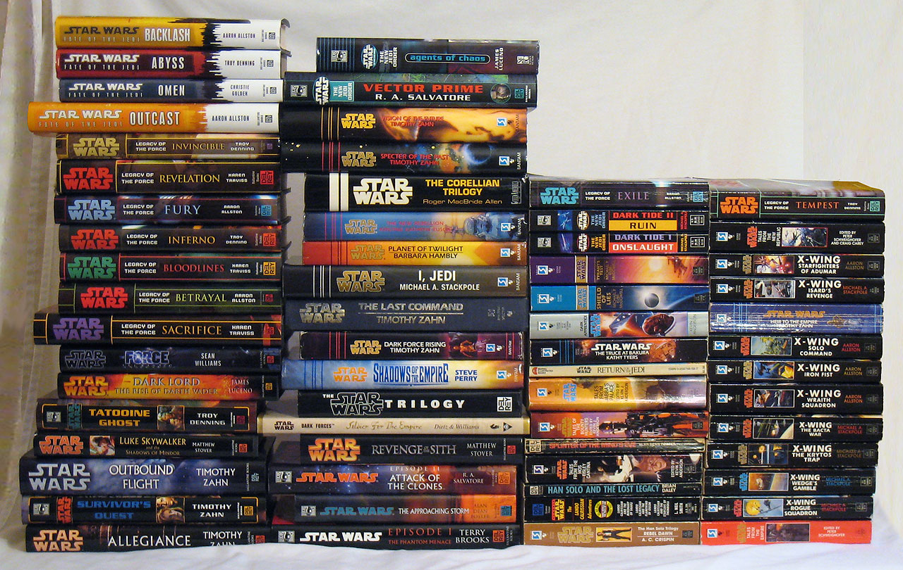
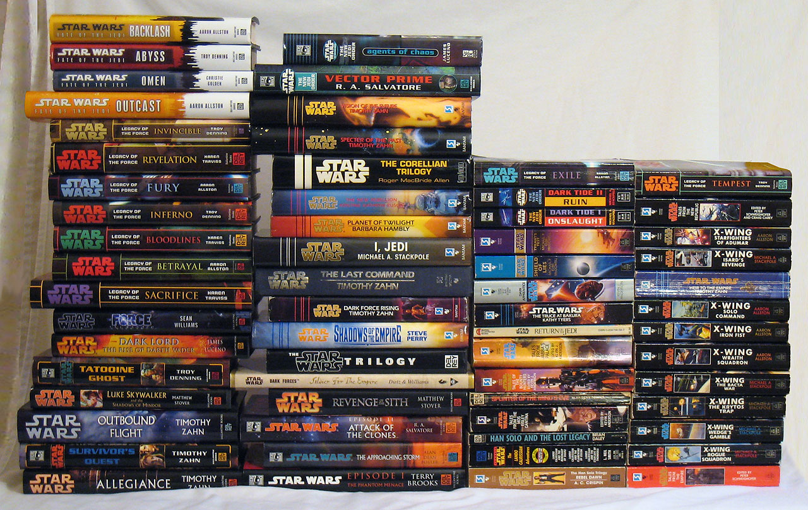

Worldbuilding is an activity in which an individual (or multiple) create a world full of unique and interesting ideas. This world can be just like ours, or completely different. It might follow the laws of physics, but it doesn't have to! Many authors use worldbuilding as a means to get a story started. They'll create places, rules, people, creatures, legends, gods, and anything else they desire.
Personally, I like to use worldbuilding when I'm creating games. Most of my creative process will start with an idea for something, usually a game mechanic. I'll then implement that mechanic, then try and come up with a reason why that specific idea would be used in the world. This is an important process, because without this, the story can seem lackluster or improvised.
A popular example of worldbuilding is J.R.R. Tolkien's Middle Earth, in which he based his best-selling novels, The Lord of the Rings and The Hobbit. Another example would be Star Wars, which had many spinoff novels, TV shows, and comics.
One of the great things about worldbuilding is that if you flesh out your world enough, it not only helps you build strong novels, but can also help other authors make content in your universe. For example, many people have adapted and rewritten the characters and stories from Sherlock Holmes in their own works. This can help keep these stories in the mainstream, and give them a much longer life than usual.
Worldbuilding is an excellent tool to have in your creative process, and it's also a great resource for anyone looking to get started with storytelling.

For further research on worldbuilding, check out the links below:
(Links will open in a new tab)
Sign up for the Worldbuilding newsletter!